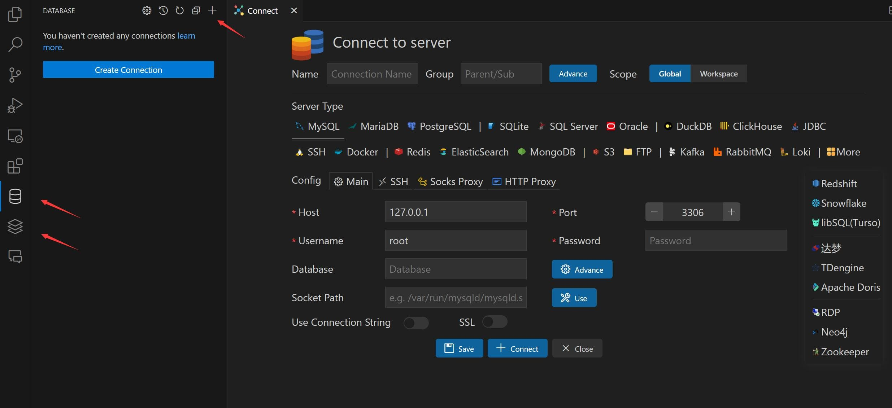
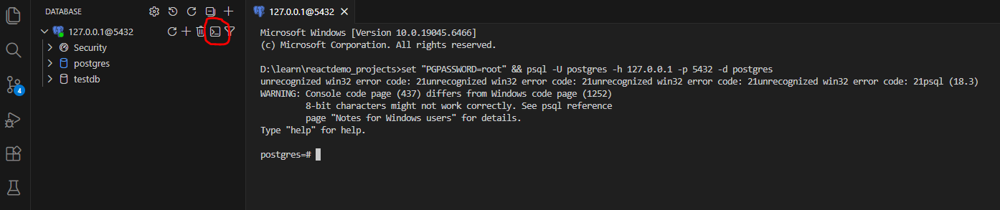

Give the connection name postgres
Provide the password you set when you installed PostgreSQL
Click the "connect button"
Now vs code panel look like below:

That means that PostgreSQL is working properly. In this terminal, we can make new database, table etc.